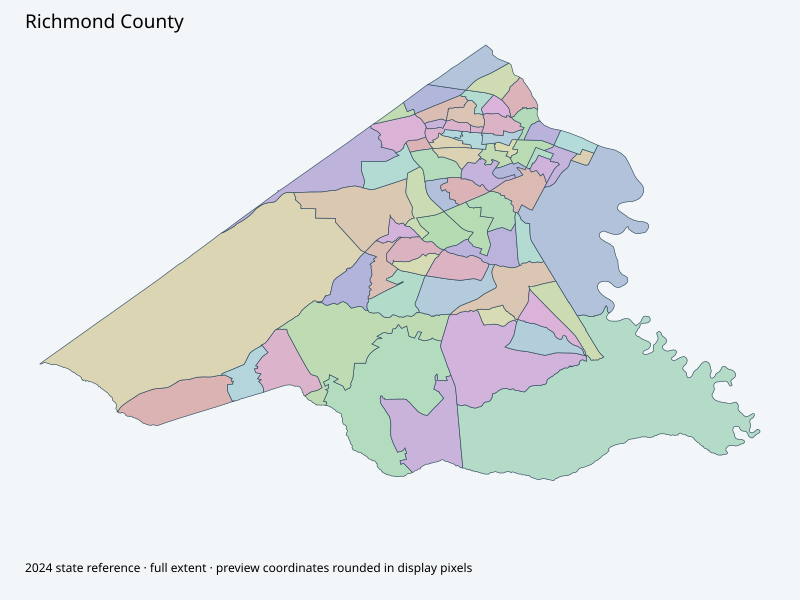

Map index · 68 explicit-FIPS 2024 map rows; 68 historical result identities. No approved crosswalk.

Full native coordinate/attribute extraction (gzip JSON) · Original complete statewide ZIP
Augusta-Richmond official election parent retained. State2024 complete precinct geometry acquired; current countywide boundary asset, documentary November approval and native crosswalk unavailable in this bounded investigation.
Full objects, county source IDs/clocks and attributes: all 2,701 native contexts. isVirtual:false and source label precinct do not prove physical geometry.
| Source name | Full source GUID | Breakdown ordinal | Source | Map status |
|---|---|---|---|---|
| 101 | 01000000-d884-2e72-8909-08dcda4beb02 | 0 | 2024NovGen--richmond-county-ga | unreviewed / no approved map join |
| 102 | 01000000-d884-2e72-f11d-08dcda4beb11 | 1 | 2024NovGen--richmond-county-ga | unreviewed / no approved map join |
| 103 | 01000000-d884-2e72-516b-08dcda4beb21 | 2 | 2024NovGen--richmond-county-ga | unreviewed / no approved map join |
| 104 | 01000000-d884-2e72-c1e3-08dcda4beb30 | 3 | 2024NovGen--richmond-county-ga | unreviewed / no approved map join |
| 105 | 01000000-d884-2e72-0673-08dcda4beb40 | 4 | 2024NovGen--richmond-county-ga | unreviewed / no approved map join |
| 106 | 01000000-d884-2e72-2fd5-08dcda4beb4f | 5 | 2024NovGen--richmond-county-ga | unreviewed / no approved map join |
| 107 | 01000000-d884-2e72-371a-08dcda4beb5e | 6 | 2024NovGen--richmond-county-ga | unreviewed / no approved map join |
| 108 | 01000000-d884-2e72-3711-08dcda4beb6f | 7 | 2024NovGen--richmond-county-ga | unreviewed / no approved map join |
| 109 | 01000000-d884-2e72-c096-08dcda4beb7e | 8 | 2024NovGen--richmond-county-ga | unreviewed / no approved map join |
| 110 | 01000000-d884-2e72-8fb4-08dcda4beb8d | 9 | 2024NovGen--richmond-county-ga | unreviewed / no approved map join |
| 111 | 01000000-d884-2e72-80b6-08dcda4beb9c | 10 | 2024NovGen--richmond-county-ga | unreviewed / no approved map join |
| 112 | 01000000-d884-2e72-ff91-08dcda4bebac | 11 | 2024NovGen--richmond-county-ga | unreviewed / no approved map join |
| 115 | 01000000-d884-2e72-366d-08dcda4bebbd | 12 | 2024NovGen--richmond-county-ga | unreviewed / no approved map join |
| 201 | 01000000-d884-2e72-3fff-08dcda4bebcc | 13 | 2024NovGen--richmond-county-ga | unreviewed / no approved map join |
| 202 | 01000000-d884-2e72-808b-08dcda4bebe1 | 14 | 2024NovGen--richmond-county-ga | unreviewed / no approved map join |
| 203 | 01000000-d884-2e72-441f-08dcda4bebf1 | 15 | 2024NovGen--richmond-county-ga | unreviewed / no approved map join |
| 204 | 01000000-d884-2e72-bcfc-08dcda4bec00 | 16 | 2024NovGen--richmond-county-ga | unreviewed / no approved map join |
| 207 | 01000000-d884-2e72-c44e-08dcda4bec0f | 17 | 2024NovGen--richmond-county-ga | unreviewed / no approved map join |
| 208 | 01000000-d884-2e72-e9b6-08dcda4bec1e | 18 | 2024NovGen--richmond-county-ga | unreviewed / no approved map join |
| 210 | 01000000-d884-2e72-d07c-08dcda4bec2d | 19 | 2024NovGen--richmond-county-ga | unreviewed / no approved map join |
| 301 | 01000000-d884-2e72-8a97-08dcda4bec3d | 20 | 2024NovGen--richmond-county-ga | unreviewed / no approved map join |
| 302 | 01000000-d884-2e72-a1e1-08dcda4bec4d | 21 | 2024NovGen--richmond-county-ga | unreviewed / no approved map join |
| 303 | 01000000-d884-2e72-9fb7-08dcda4bec5c | 22 | 2024NovGen--richmond-county-ga | unreviewed / no approved map join |
| 304 | 01000000-d884-2e72-2af1-08dcda4bec6d | 23 | 2024NovGen--richmond-county-ga | unreviewed / no approved map join |
| 306 | 01000000-d884-2e72-d3dc-08dcda4bec7c | 24 | 2024NovGen--richmond-county-ga | unreviewed / no approved map join |
| 307 | 01000000-d884-2e72-702d-08dcda4bec8c | 25 | 2024NovGen--richmond-county-ga | unreviewed / no approved map join |
| 308 | 01000000-d884-2e72-06f8-08dcda4bec9d | 26 | 2024NovGen--richmond-county-ga | unreviewed / no approved map join |
| 310 | 01000000-d884-2e72-4314-08dcda4becad | 27 | 2024NovGen--richmond-county-ga | unreviewed / no approved map join |
| 401 | 01000000-d884-2e72-b7b5-08dcda4becbc | 28 | 2024NovGen--richmond-county-ga | unreviewed / no approved map join |
| 402 | 01000000-d884-2e72-b8fb-08dcda4beccc | 29 | 2024NovGen--richmond-county-ga | unreviewed / no approved map join |
| 403 | 01000000-d884-2e72-fdf7-08dcda4bece3 | 30 | 2024NovGen--richmond-county-ga | unreviewed / no approved map join |
| 405 | 01000000-d884-2e72-ffa9-08dcda4becf4 | 31 | 2024NovGen--richmond-county-ga | unreviewed / no approved map join |
| 406 | 01000000-d884-2e72-c578-08dcda4bed05 | 32 | 2024NovGen--richmond-county-ga | unreviewed / no approved map join |
| 501 | 01000000-d884-2e72-3968-08dcda4bed19 | 33 | 2024NovGen--richmond-county-ga | unreviewed / no approved map join |
| 502 | 01000000-d884-2e72-bc98-08dcda4bed28 | 34 | 2024NovGen--richmond-county-ga | unreviewed / no approved map join |
| 503 | 01000000-d884-2e72-2d05-08dcda4bed38 | 35 | 2024NovGen--richmond-county-ga | unreviewed / no approved map join |
| 504 | 01000000-d884-2e72-d210-08dcda4bed47 | 36 | 2024NovGen--richmond-county-ga | unreviewed / no approved map join |
| 505 | 01000000-d884-2e72-9bfb-08dcda4bed57 | 37 | 2024NovGen--richmond-county-ga | unreviewed / no approved map join |
| 506 | 01000000-d884-2e72-228f-08dcda4bed67 | 38 | 2024NovGen--richmond-county-ga | unreviewed / no approved map join |
| 507 | 01000000-d884-2e72-cd51-08dcda4bed76 | 39 | 2024NovGen--richmond-county-ga | unreviewed / no approved map join |
| 601 | 01000000-d884-2e72-9a9e-08dcda4bed86 | 40 | 2024NovGen--richmond-county-ga | unreviewed / no approved map join |
| 602 | 01000000-d884-2e72-227b-08dcda4bed96 | 41 | 2024NovGen--richmond-county-ga | unreviewed / no approved map join |
| 604 | 01000000-d884-2e72-61ab-08dcda4beda6 | 42 | 2024NovGen--richmond-county-ga | unreviewed / no approved map join |
| 605 | 01000000-d884-2e72-a305-08dcda4bedb6 | 43 | 2024NovGen--richmond-county-ga | unreviewed / no approved map join |
| 606 | 01000000-d884-2e72-ceea-08dcda4bedc5 | 44 | 2024NovGen--richmond-county-ga | unreviewed / no approved map join |
| 607 | 01000000-d884-2e72-bd12-08dcda4bedd5 | 45 | 2024NovGen--richmond-county-ga | unreviewed / no approved map join |
| 608 | 01000000-d884-2e72-bf34-08dcda4bede5 | 46 | 2024NovGen--richmond-county-ga | unreviewed / no approved map join |
| 701 | 01000000-d884-2e72-ed93-08dcda4bedf4 | 47 | 2024NovGen--richmond-county-ga | unreviewed / no approved map join |
| 702 | 01000000-d884-2e72-56e9-08dcda4bee06 | 48 | 2024NovGen--richmond-county-ga | unreviewed / no approved map join |
| 703 | 01000000-d884-2e72-0494-08dcda4bee16 | 49 | 2024NovGen--richmond-county-ga | unreviewed / no approved map join |
| 704 | 01000000-d884-2e72-5591-08dcda4bee25 | 50 | 2024NovGen--richmond-county-ga | unreviewed / no approved map join |
| 705 | 01000000-d884-2e72-a104-08dcda4bee34 | 51 | 2024NovGen--richmond-county-ga | unreviewed / no approved map join |
| 706 | 01000000-d884-2e72-aec3-08dcda4bee45 | 52 | 2024NovGen--richmond-county-ga | unreviewed / no approved map join |
| 707 | 01000000-d884-2e72-5db1-08dcda4bee55 | 53 | 2024NovGen--richmond-county-ga | unreviewed / no approved map join |
| 708 | 01000000-d884-2e72-acac-08dcda4bee64 | 54 | 2024NovGen--richmond-county-ga | unreviewed / no approved map join |
| 709 | 01000000-d884-2e72-06c4-08dcda4bee74 | 55 | 2024NovGen--richmond-county-ga | unreviewed / no approved map join |
| 801 | 01000000-d884-2e72-3ee7-08dcda4bee83 | 56 | 2024NovGen--richmond-county-ga | unreviewed / no approved map join |
| 801B | 01000000-d884-2e72-9b96-08dcda4bee92 | 57 | 2024NovGen--richmond-county-ga | unreviewed / no approved map join |
| 802 | 01000000-d884-2e72-6088-08dcda4beea2 | 58 | 2024NovGen--richmond-county-ga | unreviewed / no approved map join |
| 803 | 01000000-d884-2e72-e787-08dcda4beeb1 | 59 | 2024NovGen--richmond-county-ga | unreviewed / no approved map join |
| 804 | 01000000-d884-2e72-8cdc-08dcda4beec1 | 60 | 2024NovGen--richmond-county-ga | unreviewed / no approved map join |
| 804H | 01000000-d884-2e72-524a-08dcda4beed5 | 61 | 2024NovGen--richmond-county-ga | unreviewed / no approved map join |
| 805 | 01000000-d884-2e72-1be7-08dcda4beee5 | 62 | 2024NovGen--richmond-county-ga | unreviewed / no approved map join |
| 806 | 01000000-d884-2e72-a073-08dcda4beef6 | 63 | 2024NovGen--richmond-county-ga | unreviewed / no approved map join |
| 807 | 01000000-d884-2e72-41ca-08dcda4bef08 | 64 | 2024NovGen--richmond-county-ga | unreviewed / no approved map join |
| 808 | 01000000-d884-2e72-9572-08dcda4bef17 | 65 | 2024NovGen--richmond-county-ga | unreviewed / no approved map join |
| 810 | 01000000-d884-2e72-13e7-08dcda4bef27 | 66 | 2024NovGen--richmond-county-ga | unreviewed / no approved map join |
| 811 | 01000000-d884-2e72-e59a-08dcda4bef37 | 67 | 2024NovGen--richmond-county-ga | unreviewed / no approved map join |
| Original row ordinal | DISTRICT | PRECINCT_I | PRECINCT_N |
|---|---|---|---|
| 855 | 245801 | 801 | 801 |
| 860 | 245804H | 804H | 804H |
| 861 | 245810 | 810 | 810 |
| 863 | 245803 | 803 | 803 |
| 864 | 245801B | 801B | 801B |
| 880 | 245811 | 811 | 811 |
| 881 | 245804 | 804 | 804 |
| 882 | 245807 | 807 | 807 |
| 883 | 245406 | 406 | 406 |
| 884 | 245405 | 405 | 405 |
| 885 | 245401 | 401 | 401 |
| 886 | 245606 | 606 | 606 |
| 887 | 245601 | 601 | 601 |
| 888 | 245403 | 403 | 403 |
| 889 | 245501 | 501 | 501 |
| 892 | 245310 | 310 | 310 |
| 893 | 245402 | 402 | 402 |
| 903 | 245506 | 506 | 506 |
| 904 | 245306 | 306 | 306 |
| 905 | 245502 | 502 | 502 |
| 906 | 245505 | 505 | 505 |
| 907 | 245507 | 507 | 507 |
| 908 | 245201 | 201 | 201 |
| 909 | 245704 | 704 | 704 |
| 910 | 245302 | 302 | 302 |
| 911 | 245304 | 304 | 304 |
| 912 | 245301 | 301 | 301 |
| 915 | 245308 | 308 | 308 |
| 919 | 245706 | 706 | 706 |
| 920 | 245705 | 705 | 705 |
| 928 | 245802 | 802 | 802 |
| 930 | 245806 | 806 | 806 |
| 931 | 245608 | 608 | 608 |
| 932 | 245808 | 808 | 808 |
| 933 | 245607 | 607 | 607 |
| 934 | 245504 | 504 | 504 |
| 935 | 245605 | 605 | 605 |
| 936 | 245604 | 604 | 604 |
| 937 | 245602 | 602 | 602 |
| 938 | 245805 | 805 | 805 |
| 939 | 245115 | 115 | 115 |
| 940 | 245104 | 104 | 104 |
| 941 | 245503 | 503 | 503 |
| 942 | 245202 | 202 | 202 |
| 943 | 245208 | 208 | 208 |
| 944 | 245210 | 210 | 210 |
| 945 | 245303 | 303 | 303 |
| 946 | 245108 | 108 | 108 |
| 947 | 245204 | 204 | 204 |
| 948 | 245110 | 110 | 110 |
| 949 | 245207 | 207 | 207 |
| 950 | 245105 | 105 | 105 |
| 951 | 245203 | 203 | 203 |
| 952 | 245101 | 101 | 101 |
| 953 | 245307 | 307 | 307 |
| 954 | 245107 | 107 | 107 |
| 955 | 245111 | 111 | 111 |
| 956 | 245102 | 102 | 102 |
| 957 | 245701 | 701 | 701 |
| 958 | 245709 | 709 | 709 |
| 959 | 245708 | 708 | 708 |
| 960 | 245703 | 703 | 703 |
| 961 | 245707 | 707 | 707 |
| 962 | 245702 | 702 | 702 |
| 963 | 245106 | 106 | 106 |
| 964 | 245103 | 103 | 103 |
| 965 | 245109 | 109 | 109 |
| 966 | 245112 | 112 | 112 |